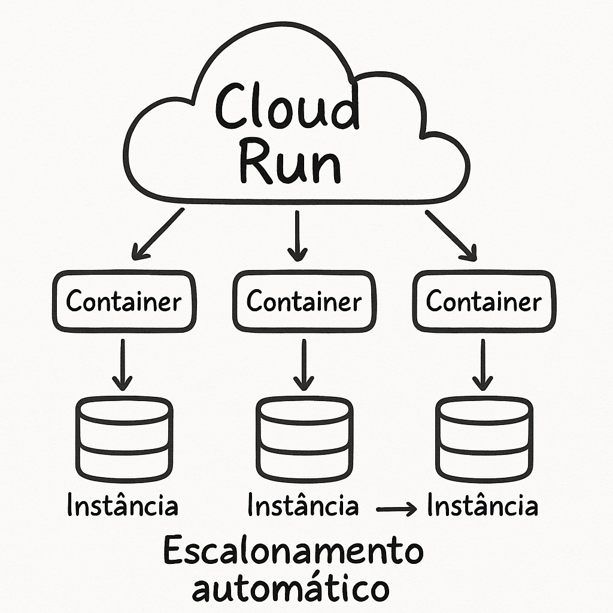
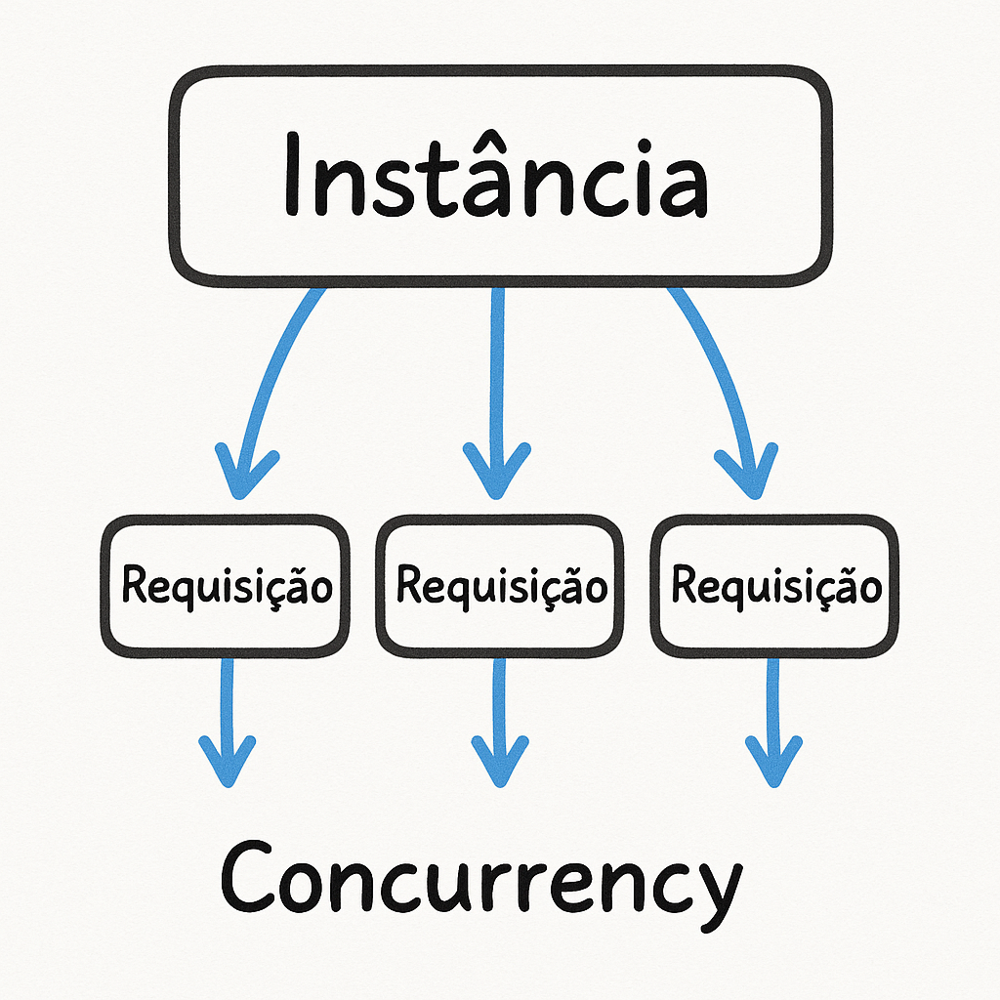
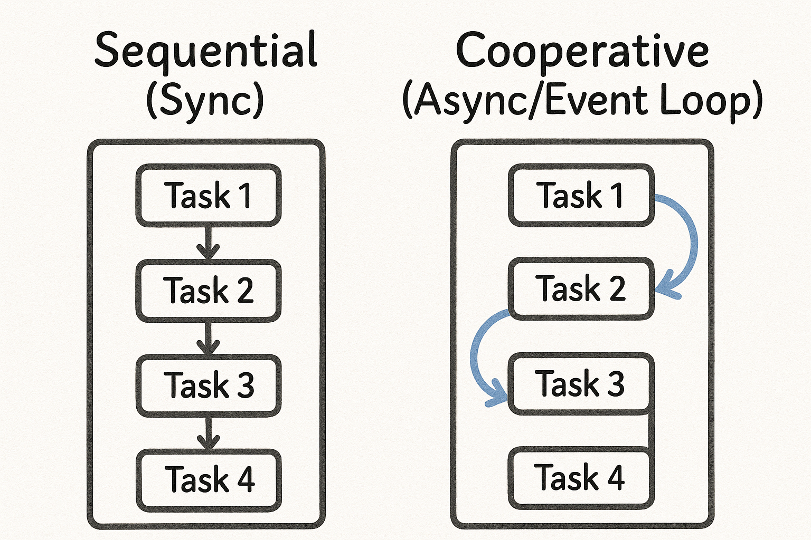

Entendendo FastAPI, async/sync e a verdadeira escalabilidade de APIs
FastAPI no Cloud Run: Entendendo de Verdade o que Roda por Trás
Quando começamos a desenvolver APIs modernas, é fácil cair na armadilha de acreditar que basta usar ferramentas “rápidas” para termos aplicações escaláveis.
FastAPI no Cloud Run? Pronto! Sucesso garantido.
Mas será que é só isso mesmo?
Será que sabemos o que realmente acontece entre o servidor que recebe as requisições e a forma como o Python executa nosso código?
Neste post, quero fazer um passeio pelas camadas envolvidas nesse processo:
Cloud Run → Uvicorn → FastAPI → Event Loop e ThreadPool.
☁️ Cloud Run: Infraestrutura Serverless para Suas APIs
O Cloud Run é um serviço da Google que executa containers de maneira automática e escalável.
Você sobe um container e ele cuida de praticamente tudo:
- Gerenciamento de infraestrutura
- Balanceamento de carga
- Escalonamento automático (de zero até milhares de instâncias)

A promessa é linda: seu código escala sem você se preocupar com servidores.
Mas tem um detalhe importante:
O Cloud Run escala instâncias — não conexões.
Ou seja, cada instância precisa ser bem otimizada para lidar com múltiplas requisições ao mesmo tempo.
Não adianta rodar código ineficiente esperando que o Cloud Run “milagre” a performance.
Como Funcionam as Instâncias no Cloud Run?
Quando você sobe seu serviço no Cloud Run, ele fica “adormecido”, esperando a primeira chamada.
- Chegou uma requisição? O Cloud Run ativa seu container.
- Chegaram várias requisições? Ele automaticamente cria mais instâncias para atender ao volume.
Cada instância funciona como uma mini-fábrica do seu código.
Se o movimento aumenta, mais fábricas entram em operação. Se o movimento cai, elas são desligadas para economizar recursos (e dinheiro).
Mas atenção:
- Cada instância tem capacidade limitada de processamento.
- Cada instância pode lidar com várias requisições ao mesmo tempo (conhecido como concurrency).
- O uso de CPU, memória e tempo influencia diretamente no custo.
Se seu código é rápido e eficiente, uma única instância pode dar conta de muitas requisições.
Se for lento ou bloqueante, você precisará de mais instâncias (e vai pagar mais por isso).
Entendendo a Concurrency

A concurrency define quantas requisições uma instância consegue atender simultaneamente.
Por padrão, o Cloud Run permite até 80 requisições simultâneas por instância, mas isso é configurável.
Importante:
- Se sua aplicação não é thread-safe ou lida mal com concorrência, o Google recomenda limitar a concurrency para 1.
- Se sua aplicação lida bem com múltiplas requisições paralelas, você pode (e deve) aumentar essa configuração para reduzir custos e melhorar a performance.
🤝 Conectando Infraestrutura e Código
Agora que entendemos como o Cloud Run gerencia instâncias, vamos olhar para o outro lado:
Como nosso código Python pode aproveitar melhor essa infraestrutura?
🔄 Sync, Async e o Event Loop no Python

O Modelo Tradicional (Síncrono)
Em programação síncrona, cada operação bloqueia a thread até terminar:
def buscar_usuario(id: int):
resultado = banco.executar_query(f"SELECT * FROM usuarios WHERE id = {id}")
return resultado
def processar_pedido():
usuario = buscar_usuario(1)
produtos = buscar_produtos(usuario.id)
return criar_pedido(produtos)
Problemas:
- Cada requisição bloqueia a thread
- Recursos ficam ociosos durante esperas
- Escalabilidade severamente limitada
O Modelo Assíncrono e o Event Loop
Com async/await, o Python permite liberar a thread enquanto espera uma operação I/O terminar:
async def buscar_usuario(id: int):
resultado = await banco.executar_query(f"SELECT * FROM usuarios WHERE id = {id}")
return resultado
async def processar_pedido():
usuario = await buscar_usuario(1)
produtos = await buscar_produtos(usuario.id)
return await criar_pedido(produtos)
O Event Loop é o maestro que coordena essas operações:
- Mantém uma fila de tarefas a serem executadas
- Quando uma tarefa aguarda I/O, ele passa para a próxima
- Assim que o I/O termina, ele retoma a tarefa original
⚡ FastAPI: Concorrência Sem Dor
O FastAPI é construído sobre o Starlette, que por sua vez é um framework ASGI — o que o torna nativamente assíncrono.
Ele permite que você defina endpoints:
- Síncronos (
def) - Assíncronos (
async def)
Mas com um diferencial importante:
Mesmo endpoints def são executados de forma não bloqueante graças a um ThreadPool interno gerenciado pelo Starlette/Uvicorn.
Como Funciona?
- Endpoints
asyncdef: aproveitam o event loop e rodam em corrotinas. - Endpoints
def: são executados em um ThreadPoolExecutor (por padrão, ~40 threads por worker).
Na prática, isso significa:
- Você pode lidar com várias requisições simultâneas, mesmo com endpoints síncronos.
- O servidor continua responsivo, mesmo durante chamadas bloqueantes como sleep() ou I/O síncrono.
from fastapi import FastAPI
from time import sleep
app = FastAPI()
# Endpoint síncrono (executado no ThreadPool)
@app.get("/produtos")
def listar_produtos():
sleep(1) # Simulando operação bloqueante
return {"produtos": ["Produto 1", "Produto 2"]}
# Endpoint assíncrono (executado no Event Loop)
@app.get("/usuarios")
async def listar_usuarios():
await processar_algo()
return {"usuarios": ["Usuário 1", "Usuário 2"]}
Conclusão: Escalabilidade é Sobre Código Inteligente
O FastAPI, combinado com o Cloud Run, oferece um ambiente poderoso para APIs modernas — desde que você escreva código preparado para concorrência.
Resumo dos aprendizados:
- O Cloud Run escala instâncias, mas cada instância precisa lidar bem com concorrência.
- O FastAPI permite endpoints
defeasync def— ambos funcionam bem desde que você entenda o que está fazendo. - Programação assíncrona não é mágica, mas é fundamental para escalar APIs com I/O intensivo.
- Mesmo código síncrono pode escalar se usado com responsabilidade (e rodando no ThreadPool certo).